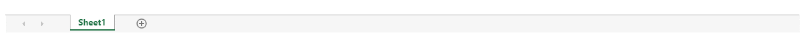

SpreadJS provides two types of scrollbars:
The default scrollbar is the classic scrollbar which can be referred here. However, you can change the classic scrollbar to customizable one by setting ScrollbarAppearance enumeration to mobile. The customization of scrollbar includes various options, such as color, border, cap, hover, auto fade etc. These customizations in mobile appearance can be used to match a website's theme or specific style of a webpage.
The mobile appearance displays four states of a scrollbar as explained below:
SpreadJS applies a special state of mobile appearance when the mouse enters a spread host:
The difference between mobile and skin appearance of scrollbar has been explained below:
| Scrollbar Behavior | Skin Apearance | Mobile Appearance |
|---|---|---|
| Scrollable Area and Visibility | Gets affected by tab strip | Does not get affected by tab strip |
| Arrows and Span | Visible | Invisible |
This example shows how to set the scrollbar appearance to mobile by using code.
| JavaScript |
Copy Code
|
|---|---|
// Set scrollbarAppearance to mobile
spread.options.scrollbarAppearance = GC.Spread.Sheets.ScrollbarAppearance.mobile;
|
|
You can also customize the scrollbar style by using class names and styles as shown in below code:
| JavaScript |
Copy Code
|
|---|---|
<style>
.gc-scroll-mobile-container {
border-radius: 8px;
}
.gc-scroll-mobile-thumb {
border-radius: 8px;
border: none;
background-color: skyblue;
background-image: linear-gradient( 45deg, rgba(255, 255, 255, 0.2) 25%, transparent 25%, transparent 50%, rgba(255, 255, 255, 0.2) 50%, rgba(255, 255, 255, 0.2) 75%, transparent 75%, transparent );
}
.gc-scroll-mobile-state-active .gc-scroll-mobile-thumb {
border: none;
background-color: skyblue;
background-image: linear-gradient( 45deg, rgba(255, 255, 255, 0.2) 25%, transparent 25%, transparent 50%, rgba(255, 255, 255, 0.2) 50%, rgba(255, 255, 255, 0.2) 75%, transparent 75%, transparent );
}
</style>
|
|
The output of above code will display the scrollbar as below:

Please follow the below mentioned styles in corresponding class names to customize the appearance of scrollbar.
| ClassNames and Styles |
Copy Code
|
|---|---|
/* The recommended styles are in the {}. */ /* Scrollbar Container (Normal State) */ .gc-scroll-mobile-container { border-radius, opacity, padding } /* The common style for scrollbar */ .gc-scroll-mobile-container-vertical { width } /* The style for vertical scrollbar */ .gc-scroll-mobile-container-horizontal { height } /* The style for horizontal scrollbar */ /* Scrollbar Thumb (Normal State) */ .gc-scroll-mobile-thumb { background, border, border-radius, opacity } /* The style for scrollbar thumb */ /* Scrollbar Track (Normal State) */ .gc-scroll-mobile-track { background, border, border-radius, opacity } /* The style for scrollbar track */ /* Combo class name, Add to Scrollbar Container */ .gc-scroll-mobile-spread-hovering /* The style for scrollbar elements when mouse enter into spread host */ .gc-scroll-mobile-state-hide /* The hide state style for scrollbar elements */ .gc-scroll-mobile-state-hover /* The hover state style for scrollbar elements */ .gc-scroll-mobile-state-active /* The active state style for scrollbar elements */ |
|
You can also set the mobile scrollbar in SpreadJS designer as shown below: